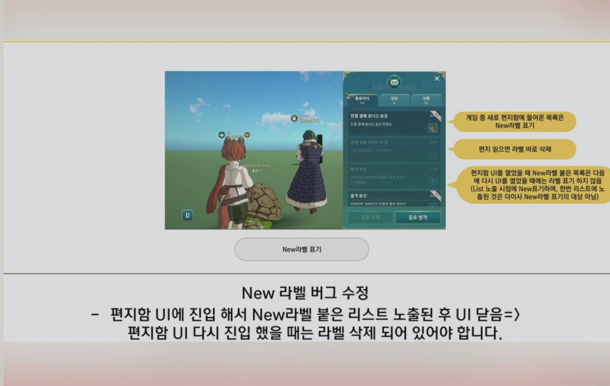
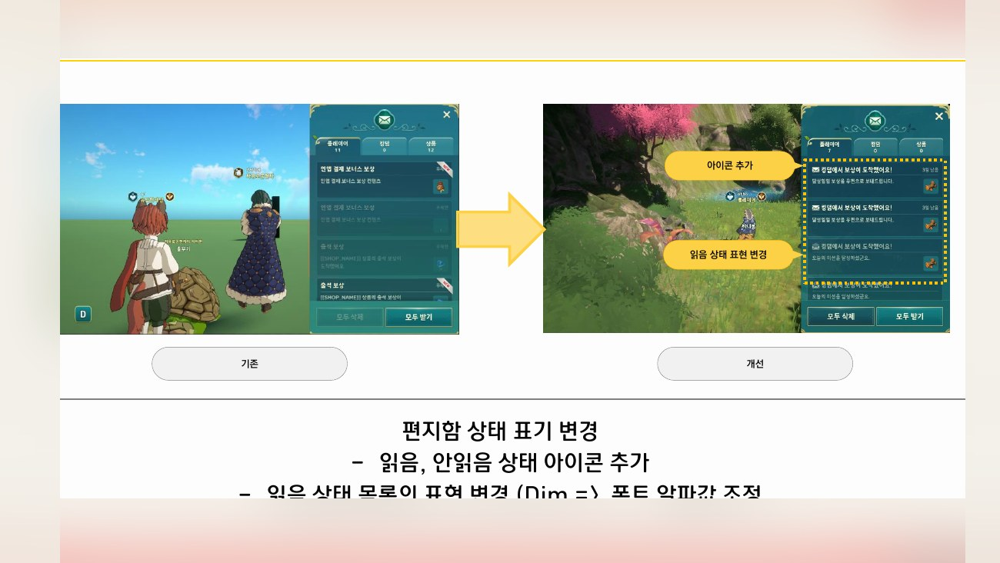
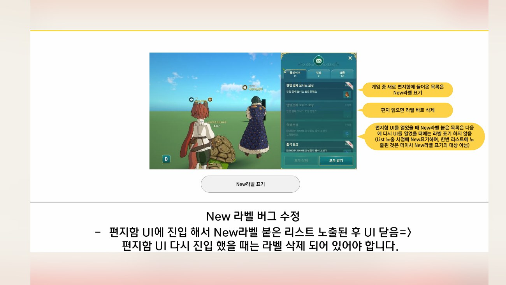
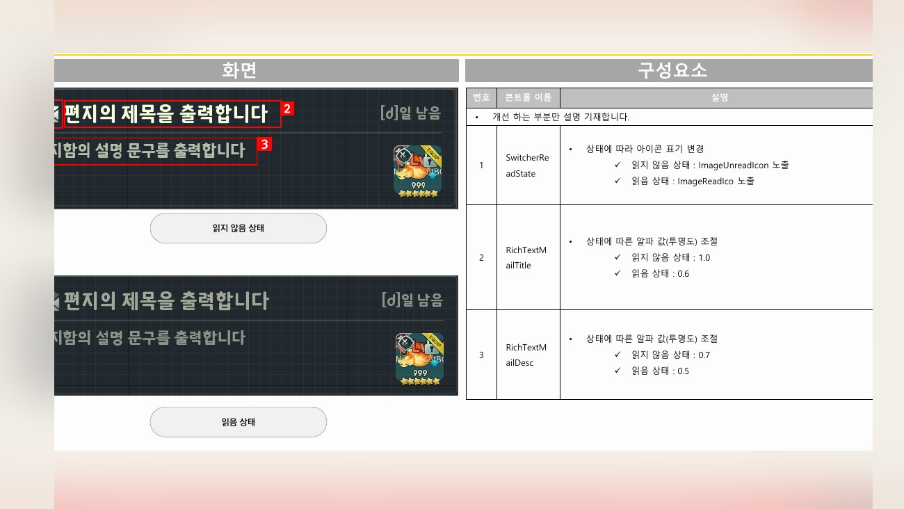

Planning Context
어떤 기획이었나
- 편지함은 보상과 알림이 모이는 공용 허브라 항목 상태, 수령 가능 여부, 만료 정보가 분명해야 합니다.
- 반복적으로 사용하는 화면이기 때문에 작은 표시 기준 차이가 누적 피로로 이어질 수 있습니다.
ProjectN · Mailbox UX
편지함의 보상 수령, 항목 표시, 상태 정보, 구조 개선을 정리한 UX 사례입니다.

Planning Context
Process
Deliverables
Result
편지함의 항목 상태와 보상 수령 흐름을 정리해 반복 사용 화면의 확인 부담을 줄이는 방향으로 개선했습니다.
Deliverable Captures
원본 문서는 포함하지 않고, 포트폴리오 확인용으로 일부 페이지만 이미지화했습니다. 슬라이드 마스터/상하단 영역은 흐림 처리했습니다.


